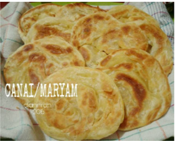
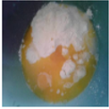
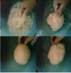
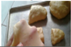

Resep Kue Maryam

Bahan bahan
- 250 gram tepung terigu
- 1 butir telur
- 3 sdm margarin, lelehkan
- 100 ml air hangat
- 2 sdmsusu bubuk (optional)
- 1/2 sdt garam
- Margarin leleh untuk olesan
- Minyak unruk merendam
Langkah Langkah
- Campur semua bahan jadi satu

- Uleni sampai kalis (aku pakai tangan) jangan takut kalau adonan lengket ya, lumuri tangan sesekali sengan tepung (tapi jangan menambahi dengan tepung) uleni terus sampai adonan kalis

- Kalisnya adonan canai tidak sekalis roti ya, kira kira seperti ini sudah cukup
